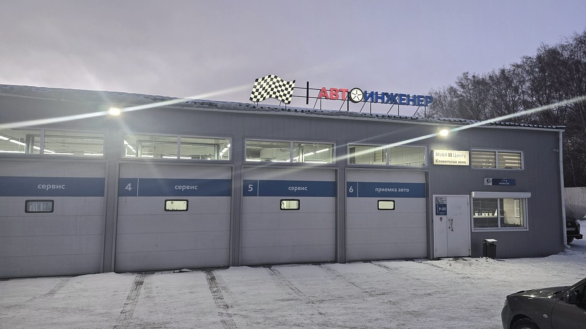
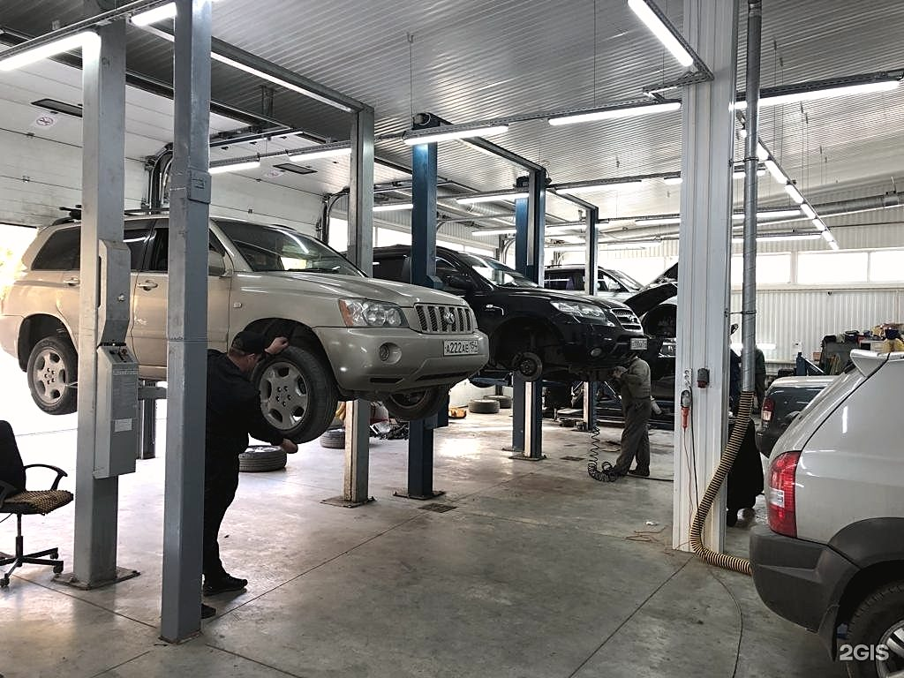
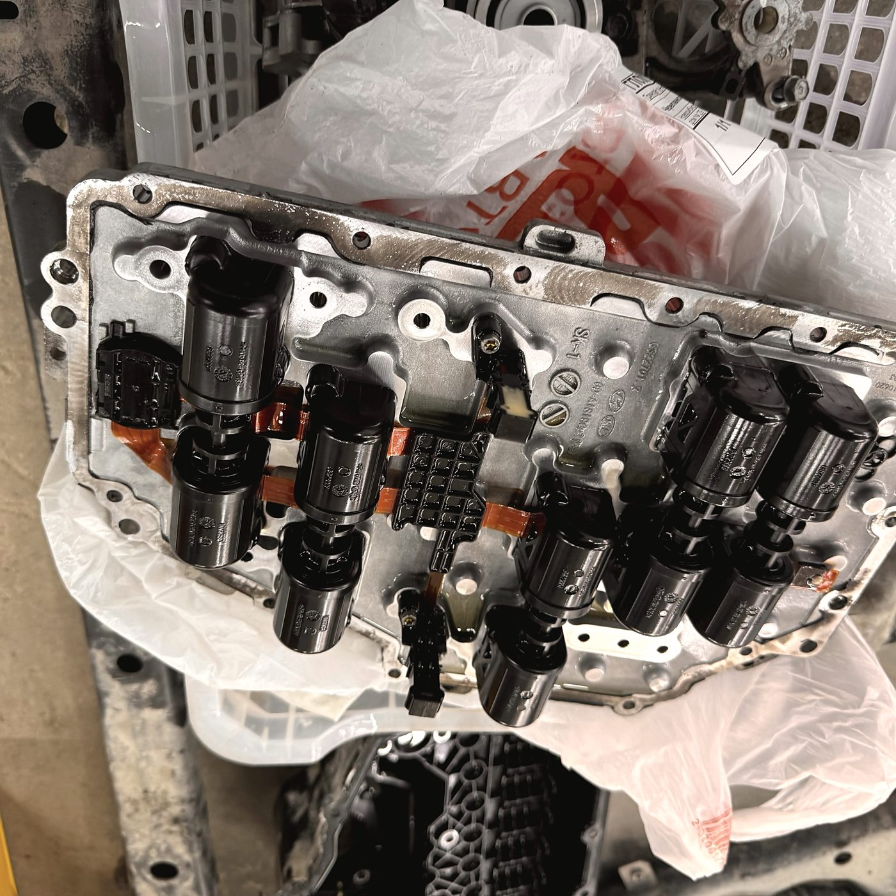
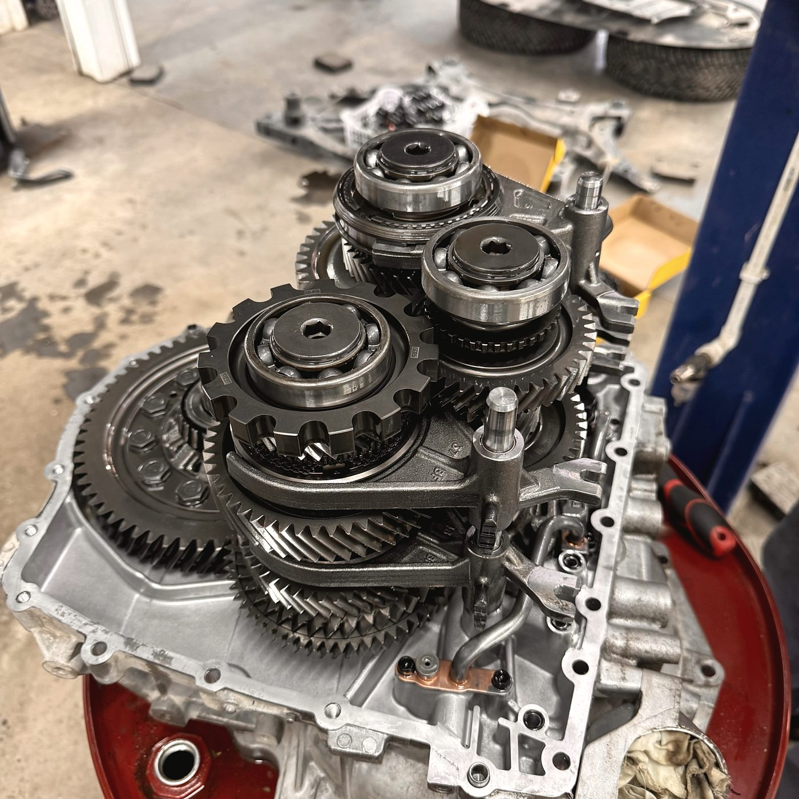
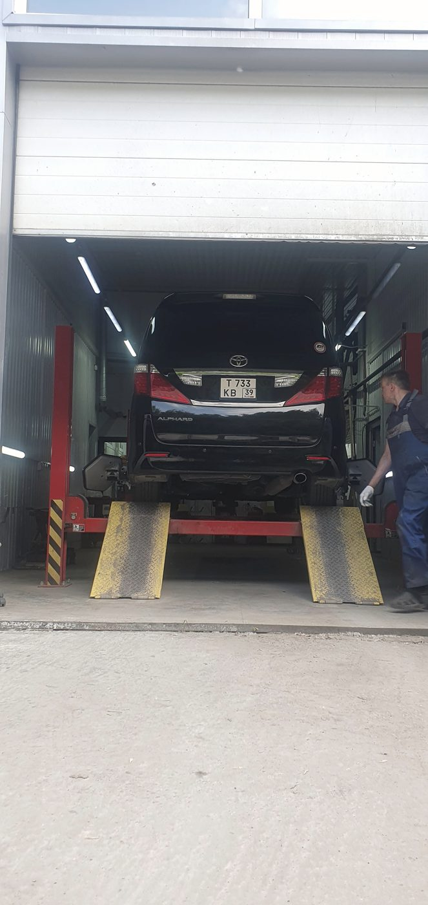
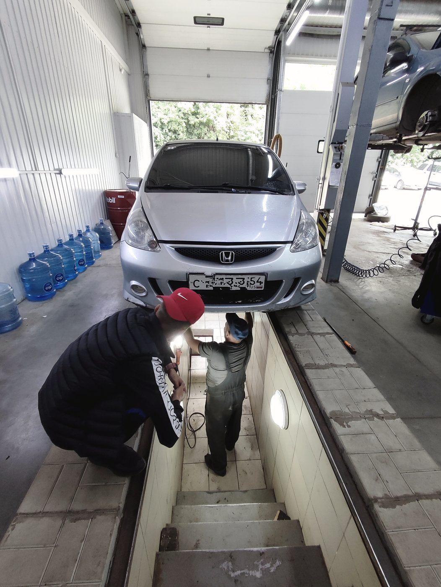
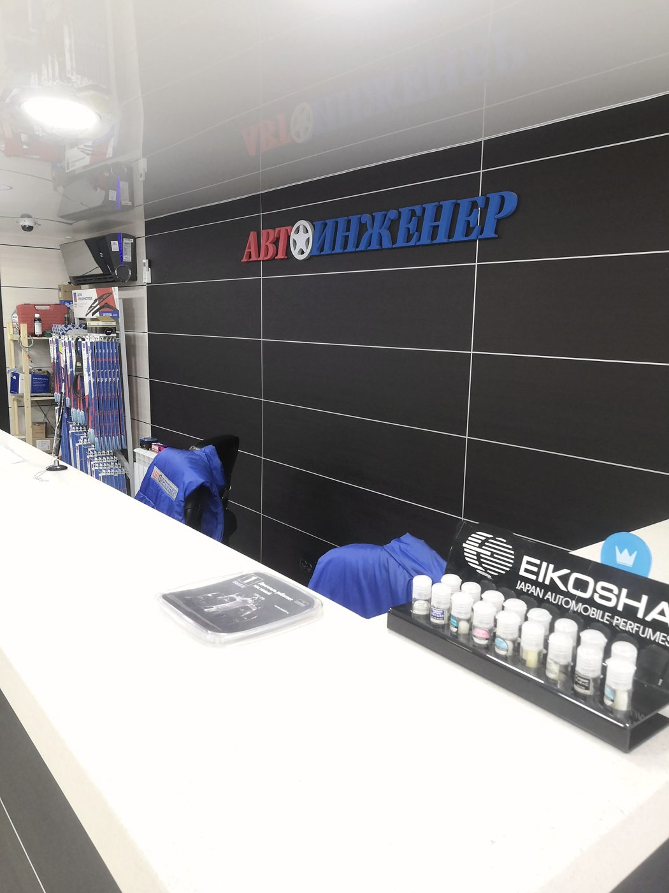

Автосервис · Северный проезд, 29 · Кировский район
Рейку чинят там,
где её умеют разбирать
Профессиональный ремонт рулевых реек стоит прямо в нашем названии — это отдельная специализация, а не строчка в прайсе. Всё остальное тоже делаем: ходовую, двигатель, электрику, развал. Запчасти подбираем и покупаем сами.

Рулевая рейка · разбор по позициям
Течёт не «рейка».
Течёт что-то внутри неё
Новая рейка в сборе стоит дороже, чем весь ремонт вместе с работой. Почти всегда виновата одна позиция из пяти — и её можно заменить, не покупая узел целиком. Вот они, по порядку от края к центру.
- 1Пыльник и сальники Порванный пыльник — это песок и вода внутри. Если под машиной пятно, а на пыльнике жирный налёт, начинается всё отсюда.
- 2Втулка и зубья рейки Стук на неровностях и люфт в руле. Втулка меняется, зубья проверяются на выработку — иногда достаточно регулировки.
- 3Распределитель гидроусилителя Руль тяжелеет в одну сторону или «закусывает». Разбираем узел, меняем уплотнения и золотник.
- 4Вал-шестерня и подшипник Хруст при повороте, гул на месте. Подшипник и вал меняются отдельно от корпуса.
- 5Тяги и наконечники Формально не рейка, но стучит так же. И после их замены обязателен развал-схождение — делаем здесь же.
Что мы делаем на приёмке: вывешиваем машину, смотрим течь, люфт и ход рулевого вала руками. Только после этого называем, что именно менять и сколько это стоит. Диагностика ходовой при этом бесплатная.
Компьютерная диагностика
Сканер показывает
не всё — и мы об этом говорим
Что видит сканер
Список ошибокБлок управления записывает ошибку только тогда, когда параметр вышел за порог. Датчик может врать в пределах допуска — и в памяти будет пусто. Так бывает с лямбда-зондом, расходомером, датчиками температуры.
Что смотрим дополнительно
Показания в движенииЖивые данные на прогретом моторе и под нагрузкой: как отрабатывает лямбда, что с топливными коррекциями, есть ли подсос воздуха. Если причину не нашли — так и скажем, а не отпустим с «ошибок нет».
Работы
Что делаем
Рулевые рейки
Ремонт узла по позициям с чертежа выше, а не замена в сборе. После — развал-схождение.
Ходовая часть
Стойки, рычаги, сайлентблоки, ступицы, тормоза. Проточка тормозных дисков вместо покупки комплекта.
Развал-схождение
После любой работы с ходовой и рулевым. Отдельно — если машину уводит или резину ест с одной стороны.
Двигатель
Бензиновые и дизельные моторы: течи, ремни, ГРМ, навесное, снятие и переборка узлов.
Сцепление
Корзина, диск, выжимной подшипник. Коробку снимаем сами — отправлять машину в другое место не нужно.
Замена масла
Аппаратная замена, официальный центр Mobil 1. Масло и фильтры в наличии, ждать поставки не нужно.
Электрика и электроника
Проводка, датчики, стартеры и генераторы, сигнализации. Компьютерная диагностика.
Климат и кондиционер
Заправка, поиск утечек, замена компрессора и радиатора, обслуживание отопителя.
Выхлопная система и сварка
Глушитель, гофра, катализатор, пороги и крепления — варим на месте.
Шиномонтаж
С записью на время, чтобы не стоять в очереди. Замена колодок при том же заезде.






Отзывы · 4,8 из 5 по 254 оценкам в 2ГИС
«Не пришлось искать запчасти — всё в одном месте. И гарантия на всю проделанную работу»
Надежда Баркова · 13 апреля 2026
Обратилась после ДТП. Сотрудники с пониманием отнеслись к моей проблеме, сами приобрели запчасти, оперативно произвели ремонт. Хочется отметить внимательность к клиентам и профессионализм мастеров.
Татьяна Петрачкова · 1 июля 2026
Заехал поменять тормозные диски и колодки, тормозуху и антифриз. Сказали, за два часа сделают — справились за час. Расходники брал свои, машина Suzuki Solio Hybrid 2021 года, редкая.
Антон Начаров · 17 мая 2026
Контакты
Северный проезд, 29
Кировский район, Новосибирск